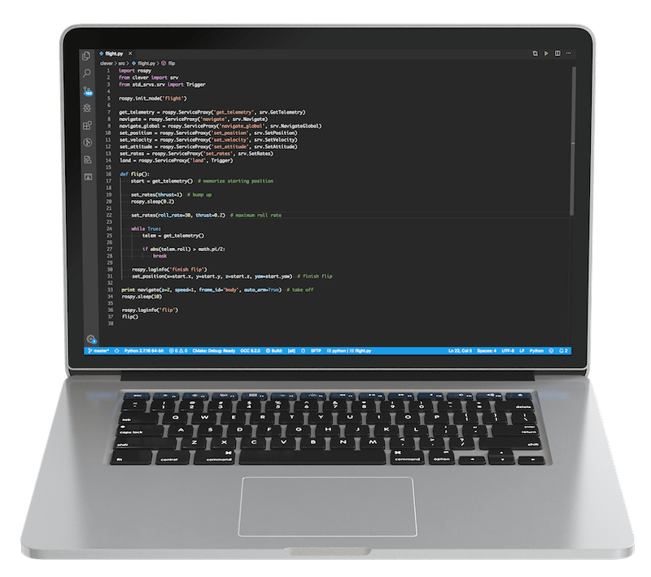

Programming

The Clover platform allows a Raspberry Pi computer to be used for programming autonomous flights. The flight program is typically written using the Python programming language. The program may receive telemetry data (which includes battery data, attitude, position, and other parameters) and send commands like: fly to a point in space, set attitude, set angular rates, and others.
The platform utilizes the ROS framework, which allows the user program to communicate with the Clover services that are running as a clover systemd daemon. The MAVROS package is used to interact with the flight controller.
PX4 uses OFFBOARD mode for autonomous flights. The Clover API can be used to transition the drone to this flight mode automatically. If you need to interrupt the autonomous flight, use your flight mode stick on your RC controller to transition to any other flight mode.
Positioning system
A drone has to use a positioning system to be able to hover still or to fly from point to point. The system should compute the drone position and feed this data into the flight controller. Clover allows using multiple positioning systems, such as optical flow (requires a camera and a rangefinder), fiducial markers (requires a camera and markers), GPS and others.
Optical flow
Optical flow is used to compute shifts between consecutive frames and to use this data to compute the drone shifting in space.
Read more in the Optical Flow article.
ArUco markers
Fiducial markers allow the drone to compute its position relative to these markers. This data may then be transferred to the flight controller.
Read more about ArUco markers in our articles about them.
GPS (outdoor flight)
GPS allows you to specify global Earth coordinates (latitude and longitude). The navigate_global function takes these as parameters instead of the usual cartesian coordinates.
Read more in the GPS connection article.
Autonomous flight
For studying Python programming language, see tutorial.
After you've configured your positioning system, you can start writing programs for autonomous flights. Use the SSH connection to the Raspberry Pi to run your scripts. In order to run a Python script use the python command:
python flight.py
Below is a complete flight program that performs a takeoff, flies forward and lands:
#coding: utf8
import rospy
from clover import srv
from std_srvs.srv import Trigger
rospy.init_node('flight')
get_telemetry = rospy.ServiceProxy('get_telemetry', srv.GetTelemetry)
navigate = rospy.ServiceProxy('navigate', srv.Navigate)
navigate_global = rospy.ServiceProxy('navigate_global', srv.NavigateGlobal)
set_position = rospy.ServiceProxy('set_position', srv.SetPosition)
set_velocity = rospy.ServiceProxy('set_velocity', srv.SetVelocity)
set_attitude = rospy.ServiceProxy('set_attitude', srv.SetAttitude)
set_rates = rospy.ServiceProxy('set_rates', srv.SetRates)
land = rospy.ServiceProxy('land', Trigger)
# Takeoff and hover 1 m above the ground
navigate(x=0, y=0, z=1, frame_id='body', auto_arm=True)
# Wait for 3 seconds
rospy.sleep(3)
# Fly forward 1 m
navigate(x=1, y=0, z=0, frame_id='body')
# Wait for 3 seconds
rospy.sleep(3)
# Perform landing
land()
The
navigatefunction call is not blocking; that is, the program will continue executing the next commands before the drone arrives at the set point. Look at thenavigate_waitsnippet for a blocking function.
Note that only the first navigate call has its auto_arm parameter set to True. This parameter arms the drone and transitions it to the OFFBOARD flight mode.
The frame_id parameter specifies which frame of reference will be used for the target point:
bodyis rigidly bound to the drone body;navigate_targethas its origin at the last target point fornavigate;mapis the drone's local frame;aruco_mapis bound to the ArUco marker map;aruco_Nis bound to the marker with ID=N.
Read more in the coordinate systems article.
You can also use the "Autonomous flight" article as an API reference.
Additional periphery
The Clover platform also exposes APIs for interacting with other peripherals. Read more in the following articles: